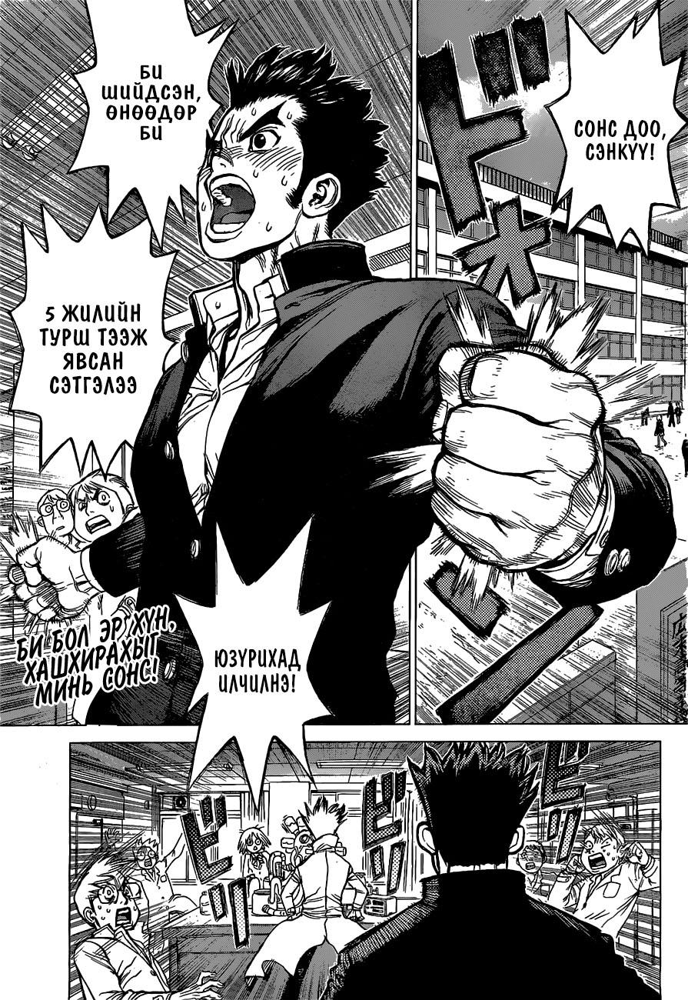

Бүлгүүд:
131 - Хөгийн новш байсан гэмт хэргийн чинь…
130 - Чөтгөрийн сонголт
129 - Жокер
128 - Бүгдийг хамарсан сүрт тулаан
127 - Medusa VS Perseus
126 - Гурван хэмжээст стратеги
125 - Шийдвэрлэх гурван хэмжээст тулаан
124 - Бурхан болон чөтгөрийн бүтээл
123 - Ухаан уралдуулах тулааны мөрий
122 - Оюун ухаан сорьсон тулааны эвлүүлдэг…
121 - Медүсагийн жинхэнэ төрх
120 - Маш нууц
119 - Шинжлэх ухааны цэргүүд
118 - Чимээгүй цэргүүд
117 - Шинжлэх ухааны эзэнт улсын сөрөг…
116 - Чиний гарт байх гайхамшиг
115 - Нэг секунд, нэг үр
114 - Чулууг бутлах чимээгүйхэн шинжлэх…
113 - Кодлогдоогүй шинжлэх ухааны харилцах…
112 - 3D аварга
111 - Шинжлэх ухааны дайн
110 - Үзэсгэлэнтэй шинжлэх ухаан
109 - Аугаа зугталт
108 - Хоёрдахь нууц хөзөр
107 - Шинжлэх ухааны хөлөг онгоц дээрх…
106 - Чулуужилтийн нууц
105 - Арлын хамгийн үзэсгэлэнтэй охин
104 - Гэмт хэргийн газрын шинжилгээний…
103 - Цөхрөл болон найдварын гэрэл
102 - Шинжлэх ухааны хөлөг онгоц Персей
101 - Эрдэнэсийн авдар
100 - Зууны үлгэрийн эхлэл
99 - Шинжлэх ухааны эзэнт улсын гэрэл…
98 - Рюүсүи
97 - Дээд түвшний боловсрол
96 - Шинжлэх ухааны нүд
95 - Анхны холбоо
94 - Хар эрдэнэсийн үнэр
93 - Хамгийн эхнийх чамд зориулагдах…
92 - Хүсэл=Шударга ёс
91 - Тэнд талх байхгүй бол улаан буудайгаар…
90 - Шинэ ертөнцийн газрын зураг
89 - Адал явдал хайгчид
88 - Хүн төрөлхтний далавч
87 - Сэнкүгийн их дэлгүүр
86 - Мөнгө
85 - Баялагийн хаан
84 - Хүн = Хүч
83 - Dr.Stone
82 - Чулуун дайны төгсгөл / 2-р аркын сүүлчийн…
81 - Хурууны үзүүр
80 - Хүн төрөлхтний хамгийн хүчирхэг…
79 - Хамгийн их хүлээж байсан мөч
78 - Алга болж устсан ч аврагдаж болох…
77 - Шинжлэх ухааны хүч
76 - Сүүлчийн тулаан
75 - 20-оос урвуу тоол
74 - Хувь заяаг шийдэх 20 секунд
73 - Маш нууц даалгавар
72 - Туршлага
71 - Prison Break
70 - Цаасан хуяг
69 - Уурын Горилл
68 - Хувьсгалын гал
67 - Нэгдсэн дайралт
66 - Худалч болон шударга хүн
65 - Үхсэн хүнээс ирсэн дуудлага
64 - Шууд яриа
63 - Мэдээллийн дайн
62 - Давхар мөшгөлт
61 - Чулуун дайны эхлэл
60 - Сахиусан тэнгэрийн хоолой ба чөтгөрийн…
59 - Холын хязгаарыг нэвтлэн ирсэн дуу…
58 - Шинжлэх ухааны давлагаа
57 - Халуун зүрх
56 - Эрдэнэс
55 - Treasure Dungeon
54 - Гялтганах цэнхэр үнэт чулуу
53 - Дархны багийнхан
52 - Хөдлөгч машины эрин үе
51 - Чулуун ертөнц дэх амттан
50 - Хүн төрөлхтний хамгийн хүчирхэг…
49 - Орчин үе рүү урагшаа
48 - Шинжлэх ухааны илд
47 - Шинжлэх ухаан VS Хүч
46 - Чулуун дайн
45 - Нэгдүгээр бүлгийн төгсгөл
44 - Хэдэн зуун шөнө, хэдэн мянган одод…
43 - Хүн төрөлхтний сүүлийн зургаан хүн
42 - Мянган жилийн түүх
41 - Доктор Стөүн
40 - 2 сая жилийн үр жимс
39 - And the winner is
38 - Галын эзэн
37 - Эрдэмтэн Кроом
36 - Кинроо Гинроо хоёр
35 - Багтай дайчин
34 - Тэмцээнийг далдуур үймүүлэгч
33 - Аюултай химийн бодисууд
32 - Тархи болон зүрх
31 - Нэг нэгнийхээ арыг даах хамтрагчид
30 - Ногоон үхэл
29 - Сэнкүгийн лаборатори
28 - Тунгалаг ертөнц
27 - Нэгэн эрдэмтний мөрөөдөл
26 - Өнгөц холбоо
25 - Би шинжлэх ухааны гэрлийг гартаа…
24 - Гэрлийн хурдаар
23 - Уран хэлтэй эр
22 - Амьд үлдэхийн төлөөх хоол
21 - Төмрийн эрин үе
20 - Чулуун зам
19 - 2,000,000 жилийн нуугдаж буй газар
18 - Шидтэнүүдийн тулаан
17 - Аймаар царай
16 - Кохакү
15 - Чулуун ертөнцийн хоёр улс
14 - Чиний итгэж байгаа зүйл
13 - Stone World The Beginning
12 - Epilogue of Prologue
11 - Шинжлэх ухааны зэвсэг
10 - Эрдэмтний багийнхан
9 - Сэнкүү Цүкасагийн эсрэг
8 - Утаан дохио илгээ
7 - Дарь бүтээх адал явдал
6 - Таижү Цүкасагийн эсрэг
5 - Юзүриха
4 - Ариун цагаан дун
3 - Чулуун ертөнцийн хаан
2 - Уран зөгнөл шинжлэх ухааны эсрэг
1 - Чулуун ертөнц
Resize
(new!)
|
Манга жагсаалт
»
Dr. Stone
Хуудас:
01
02
03
04-05
06
07
08
09
10-11
12
13
14
15
16
17
18
19
credits
